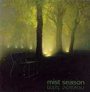

| Artist: | Mist Season |
| Title: | Mist Season |
| Label: | Seacrest Oy SCR-1001 |
| Length(s): | 58 minutes |
| Year(s) of release: | 2004 |
| Month of review: | [09/2005] |
| 1) | Peppermint Patty | 4.13 |
| 2) | Lydia | 6.44 |
| 3) | My Joy | 4.29 |
| 4) | Life Is | 4.51 |
| 5) | Siren's Gaze | 5.30 |
| 6) | Cosmic Wardance | 5.17 |
| 7) | Kati | 4.37 |
| 8) | Hong Xi Road | 5.37 |
| 9) | Marieholm | 8.47 |
| 10) | Skeptoscope Detector | 3.27 |
| 11) | Lullabye For The Little One | 4.18 |
My Joy is very bouncy and happy tune, like the opener in what I would call Spiro Gyra style. The fingerquick piano bounces along nicely, but on the whole this is simply too tuneful for me. The music does change over a few times, into something less dacning, but it does not help me. Past halfway, the drums set in for a fuller sound, but they don't get the chance to come in permanently. Too bad. Life Is is in a moody jazz style with the late nite piano ringing out. No smokey female vocalist here, but there could have been. It does not stay like that: in fact, the band soon moves to the upbeat jazz of previous tunes. Not my cup of tea. This is the first song on which I seem to hear some active guitar (and bass) playing, and some rather careful organ too. This is more what I would call jazzrock.
Siren's Gaze is an alternation of moody jazz dominated by piano and subdued guitar lined by some sax play, and a speedier cymbals dominated brand. But the moodiness dominates. Cosmic Wardance is supposed to be one of the more proggy titles. Like Lydia, it starts out somewhat EMish, or in this case with piano. The theme is a nice somber one. It is hard to give actual influences here, but I can tell you the song is very melodic and the melodies are good ones. The sax plays a role here as well, but sounding melancholic.
Kati is a mellow tune, rather easy going and moody overtones again. The band has a good sense of melody, but they can be a little too sweet at times. Fortunately, we do get a change of pace once in a while on this track. Past halfway, the flute like sound is taken over by percussive piano playing, giving the song a bit more swing. Hong Xi Road has an Oriental sound, but it does not really change the song that much, the dominant style is still jazzy moodiness, with a bit of noodling on the guitar in the middle.
Marieholm is the longest track on this album with some typical seventies, laid back jazz rock. Halfway the pace sets in with the guitar bringing forth a warm jazzrock sound and the drummer lightly lighting the way, with the piano player following right behind.
Skeptoscope Detector is probably the most proggy tune of them all. Hackett solo is quite close here, I think, say in the line of his Spectral Mornings album. There is that tad of jazzrock, and even some serious rhyhtm guitars in the back. Halfway the sax comes in for a solo spot. Lullabye For The Little One terminates this album. As you might expect, it is one of the softer tunes on the album.